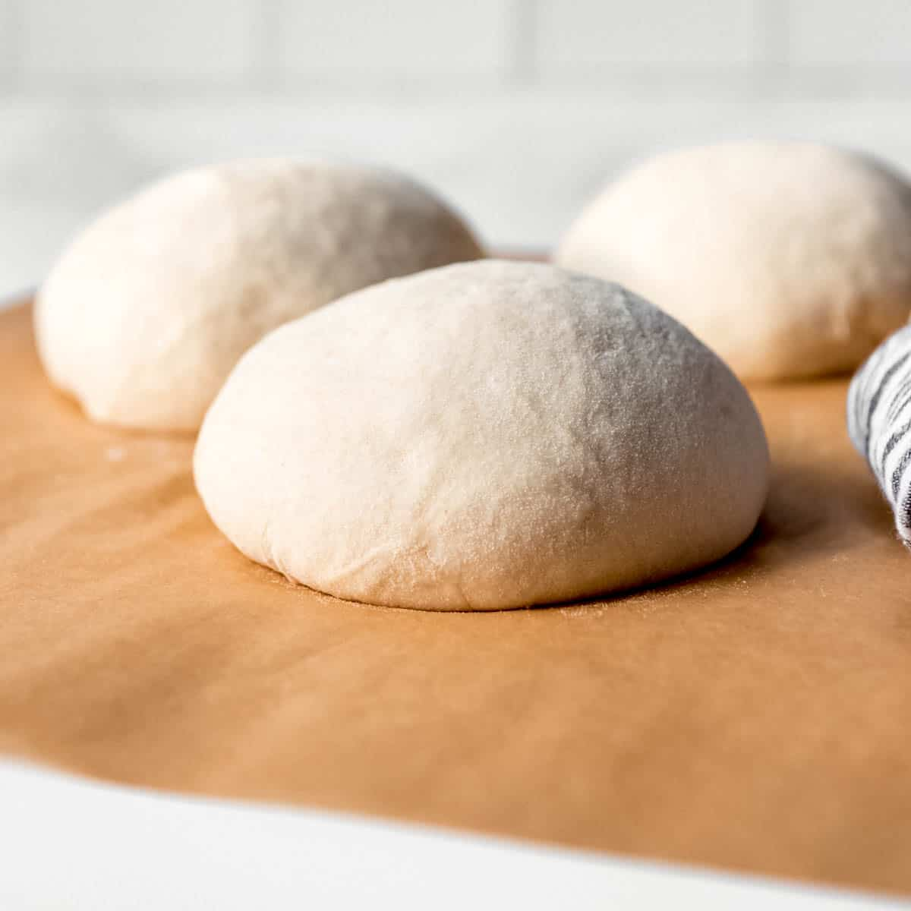

Pizza Dough

Some would say that pizza tough has been passed down through generations of the pizza making peoples (know from here forwards as the PMPs).
It is one of the most important parts of making a pizza.
On this page I will teach you how to make a pizza
Ingredients:
- Yeast
- Sugar
- Bread Flour
- Olive Oil
- Salt
Steps:
- Stretching pizza dough is the most hands-on part of the pizza crust-making process. It takes a little practice, but it's as easy as pie (pun intended). To shape the dough:
- After you're finished mixing the ingredients, allow your dough to rest on the counter for about 30 minutes. This will allow the gluten to relax, making the dough much easier to stretch and shape. Cold dough is much more difficult to work with.
- You might feel inclined to prep your workspace with a big handful of flour to prevent sticking. This is a helpful step with many kinds of dough. However, in this case, too much flour can make your pizza crust tough. Instead, rub your surface (and your hands) with a few tablespoons of olive oil and maybe a little bit of flour. This will prevent sticking, encourage a crispy texture, and ensure a gorgeous golden color.
- You have a few options when it comes to shaping the dough. Stretch it in the air, use a rolling pin, or pat it with your hands. No matter which method you choose, make sure not to overwork the dough. Working it too much will create a tough texture. When you're done, you should have an even circle that's about 10 to 12 inches wide and about ⅓-inch thick. If you get too thin, the crust may not be able to support the sauce and toppings.